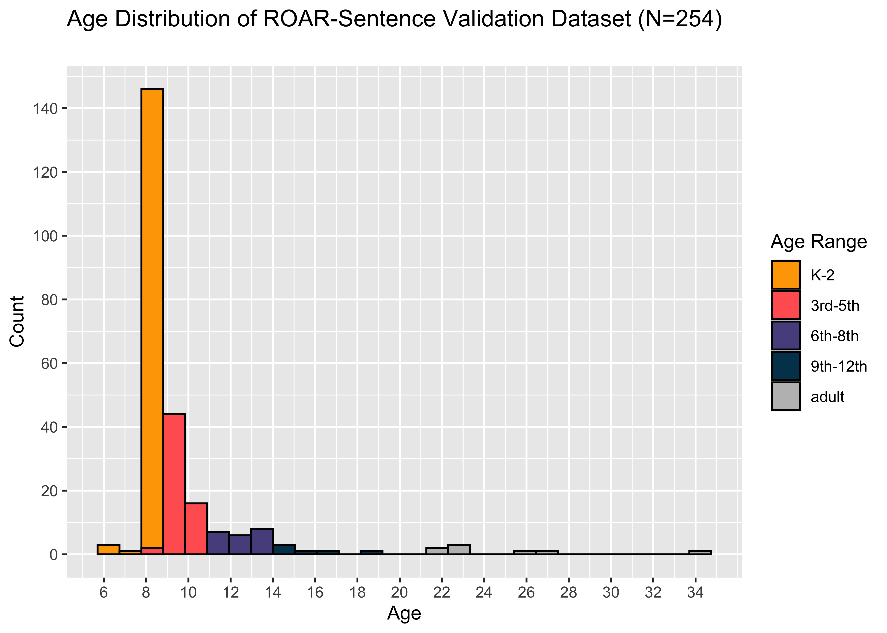
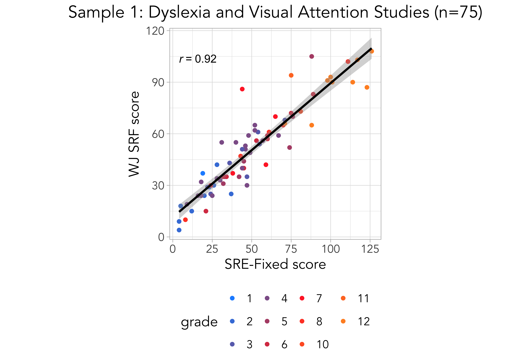
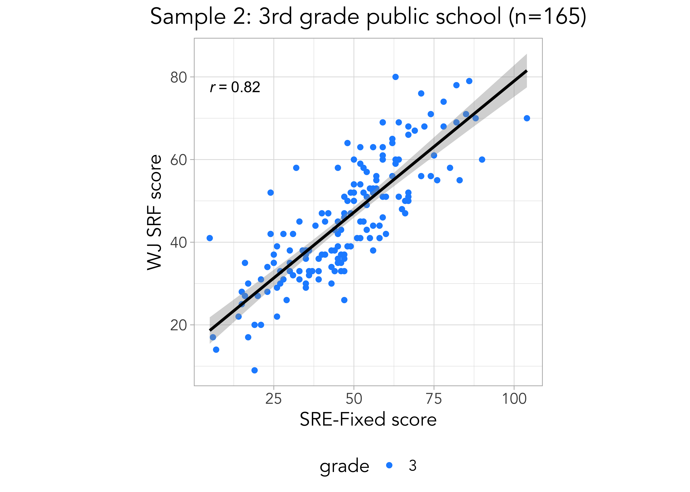
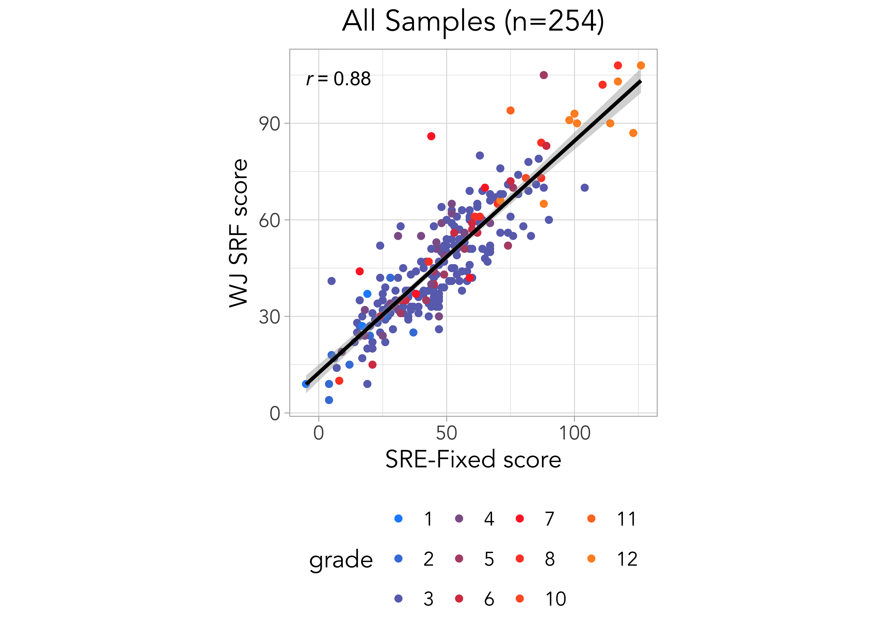
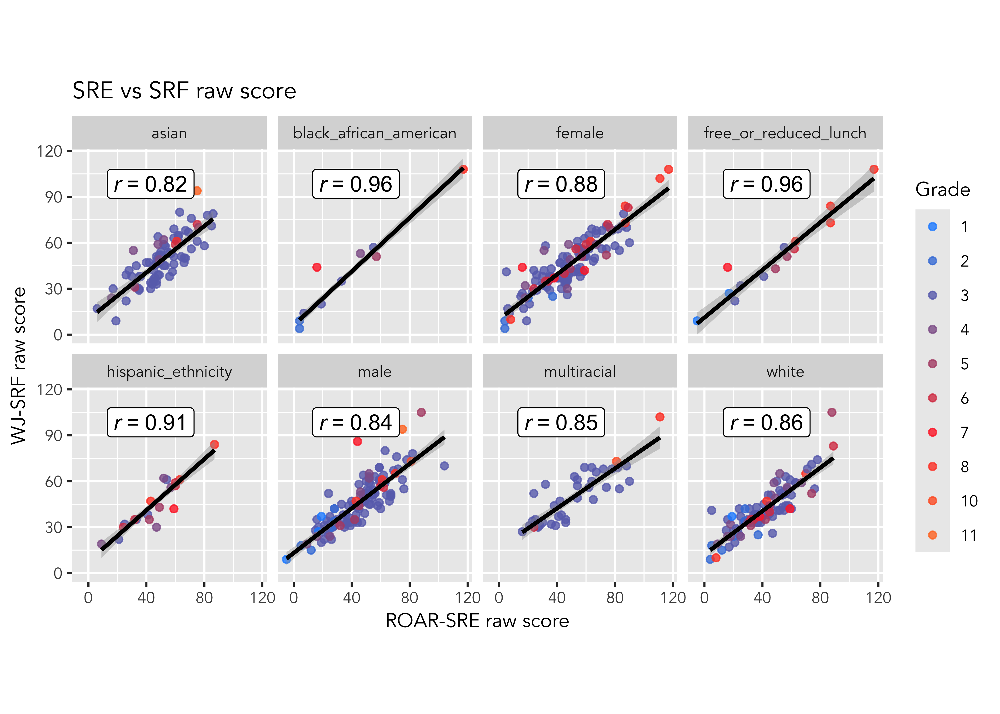
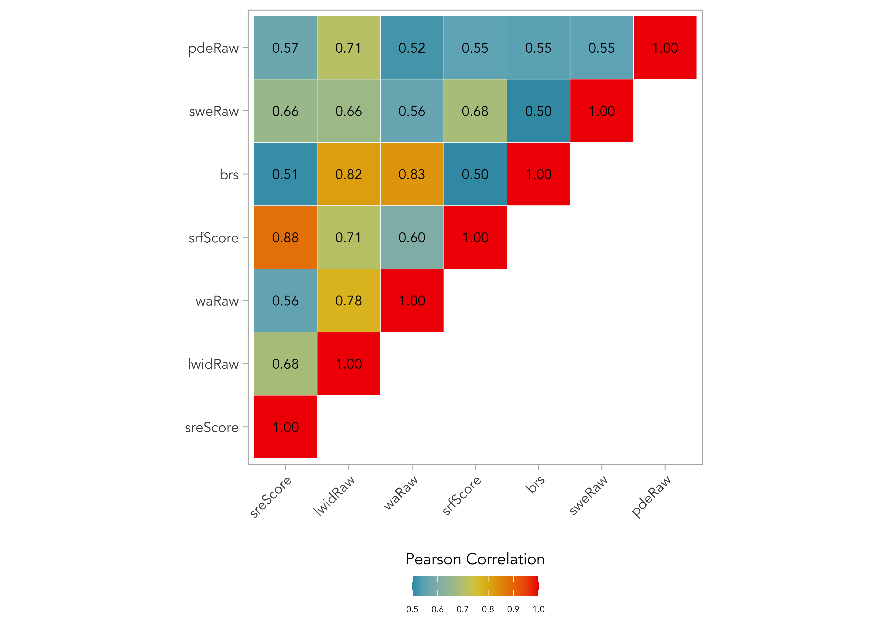
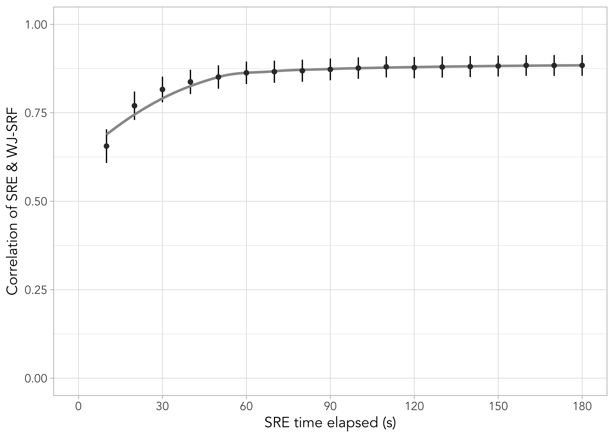
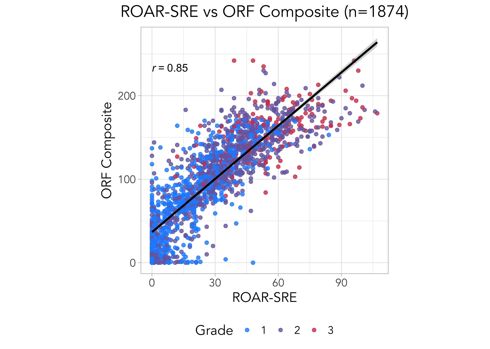

| N | % | % Missing | |
|---|---|---|---|
| Female | 125 | 49.21 | 4.72 |
| Free or Reduced Lunch | 14 | 5.51 | 94.49 |
| Race/Ethnicity | |||
| Hispanic Ethnicity | 20 | 7.87 | 4.72 |
| White | 97 | 38.19 | 4.72 |
| Black or African American | 10 | 3.94 | 4.72 |
| Asian | 79 | 31.10 | 4.72 |
| American Indian or Alaska Native | 2 | 0.79 | 4.72 |
| Hawaiian or Other Pacific Islander | 0 | 0.00 | 4.72 |
| Multiracial | 37 | 14.57 | 4.72 |
| Total | 254 | ||
24 Sentence Reading Efficiency (ROAR-Sentence) Concurrent Validity
24.1 Convergent validity with silent sentence reading fluency
24.1.1 ROAR-Sentence (ROAR-SRE) correlation with Woodcock-Johnson Sentence Reading Fluency (WJ-SRF)
ROAR-Sentence is designed to measure the latent construct of silent sentence reading efficiency, which represents the speed or efficiency with which a student can read simple sentences for understanding. The goal of the ROAR-Sentence task is to isolate reading efficiency by minimizing comprehension demands while maintaining checks for understanding.
We establish concurrent validity for ROAR-Sentence through a large-scale validation study that compares student performance on ROAR-Sentence to performance on the Woodcock-Johnson Sentence Reading Fluency (WJ-SRF) subtest, (Schrank et al. 2014). The development of ROAR-Sentence and the results of the validation study are detailed in study 3 of (Tran et al. 2023).
24.1.1.1 Background
Our goal in designing a new silent sentence reading efficiency measure was to more directly target reading efficiency by designing simple sentences that are unambiguously true or false and have minimal requirements in terms of vocabulary, syntax and background knowledge.
Traditional measures that are most similar to ROAR-Sentence are sometimes referred to as sentence reading fluency tasks, and while they are not administered online, they do elicit silent responses from students. The Woodcock Johnson (WJ) Tests of Achievement “Sentence Reading Fluency” subtest (Schrank et al. 2014), relies on an established design: A student reads a set of sentences and endorses whether each sentence is true or false. A student endorses as many sentences as they can within a fixed time limit (usually three minutes). The final score is the total number of correctly endorsed sentences minus the total number of incorrectly endorsed sentences.
The WJ-SRF is standardized to be administered in a one-on-one setting and the stimuli consist of printed lists of sentences which students read silently and mark Yes/No with a pencil to endorse the sentences as true or false (Schrank et al. 2014). Even though the criteria for item development on these assessments is not specified in detail, there is a growing literature showing the utility of this general approach. A similar paper-based silent reading assessment, the Test of Silent Reading Efficiency and Comprehension (TOSREC), also involves endorsing sentences as TRUE/FALSE during a 3 minute time period. It is straightforward to administer and score and has exceptional reliability (Johnson, Pool, and Carter 2011; Wagner, R. K., Torgesen, J. K., Rashotte, C. A., & Pearson, N. A. 2010; Wagner 2011).
24.1.1.2 Participants
Participants for the validation study were recruited through two methods. The first validation sample was obtained from a longitudinal study of children with dyslexia (ages 8-14; grades 2-8; and adults ages 19-34) and a study of visual attention (children ages 7-17; grades 1-11). In these studies trained researcher coordinators individually administered standardized assessments and participants then completed ROAR-Sentence (Tran et al. 2023).
The second validation sample comprised 3rd grade students from a local school district that agreed to participate in the validation study (see Table S1 in (Tran et al. 2023) for school demographics). 3rd grade was selected for validation because it is the most common age for a dyslexia diagnosis. To conduct in-person validations in schools, a team of 7 researcher coordinators administered assessments to the students. All research coordinators completed human subjects research training, practiced extensively, and shadowed senior administrators before conducting assessments on students. Each research coordinator completed training with feedback until they were able to reliably administer each assessment. The selection of students was based on the interest of parents and teachers. Prior to the research, parents and guardians were given the opportunity to opt their students out of the research. Teachers were also informed, and their interest in the research was conveyed to the district superintendent, who then notified the research team.
Research into ROAR-Sentence is ongoing, and a third validation sample was collected after (Tran et al. 2023) was submitted for preprint. Sample 3 includes students in grades 1-8. It was collected from a private school in a low-income urban neigborhood in California by the same team of research coordinators who collected Sample 2.
Demographics for the sample are show in #tbl-sre-wj-demographics. The distribution of participants by age is shown in #fig-sentence-age-histogram.

24.1.1.3 Measures
Students in Sample 1 completed individually-administered reading assessments in the course of intake screening for a longitudinal study of children with dyslexia and a separate study of visual attention. Students in Sample 2 were pulled out of their classrooms to complete individually-administered reading assessments. Testing for both samples included (1) Woodcock Johnson IV Tests of Achievement Sentence Reading Fluency (WJ-SRF), in which participants silently read sentences on paper in a one-on-one setting as quickly as possible and endorse them as true or false; (2) Letter Word Identification (WJ-LWID) in which participants read words out loud and are scored for accuracy; (3) Word Attack (WJ-WA) in which participants read pseudowords out loud and are scored for accuracy (Schrank et al. 2014); (4) Test of Word Reading Efficiency Sight Word Efficiency (TOWRE-SWE) in which participants read lists of real words as quickly and accurately as possible; (5) Phonemic Decoding Efficiency (TOWRE-PDE) in which participants read lists of pseudowords as quickly and accurately as possible (Torgesen, Wagner, and Rashotte 2011). Each student completed ROAR-Sentence as part of their regular school day without the presence of researchers within 2 months prior to the in-person validation.
24.1.1.4 Results
We found a strong correlation between ROAR-SRE and WJ-SRF in Samples 1 and 2 (r=0.92, r=0.91), and across all samples (r=0.88) (#fig-sample-1-3).



Strong correlation between ROAR-SRE and WJ-SRF was observed across all demographic groups (#fig-sre-srf-corr-by-demo).

Across all the samples, ROAR-SRE was moderately correlated with untimed single word reading accuracy (WJ-LWID, r=0.68), untimed pseudoword reading accuracy (WJ-WA, r=0.56), real word list reading speed (TOWRE-SWE, r=0.66), and pseudoword list reading speed (TOWRE-PDE, r=0.57) (#fig-sre-corr-matrix). This pattern of correlations supports the notion that sentence reading efficiency is a separable, yet highly related construct, to single word reading speed and accuracy.

In addition to examining the correlation between SRE and WJ-SRF, the study used precise timing data to investigate the optimal length for the assessment. Many assessments of sentence reading fluency/efficiency are 3 minutes by convention but previous work has not systematically analyzed the relationship between assessment length and reliability. Precise timing information collected by the application was used to calculate each participants’ ROAR-SRE score at 10 second time intervals which was then correlated against the full 3 minute WJ-SRF scores. The correlation between ROAR-SRE and WJ-SRF increased as a function of assessment length. However, the correspondence between the two measures hit a peak between 60 and 90 seconds (#fig-timing) indicating that the remaining assessment time did not further contribute to the reliability of the measure.

24.1.1.5 Discussion
The study demonstrated that the unproctored, online ROAR-Sentence (ROAR-SRE) assessment was highly correlated with a similar, standardized measure delivered one-on-one in person (WJ-SRF). This provides strong evidence for the concurrent validity of an online measure. Moreover, the stronger correspondence between sentence reading (WJ-SRF) versus single word decoding (WJ-LWID and WJ-WA) and single word reading efficiency (TOWRE-SWE and TOWRE-PDE) measures demonstrated that sentence and word reading are related but dissociable constructs as highlighted in other work (Silverman et al. 2013). Finally, the analysis of assessment length demonstrated that a one minute sentence reading efficiency measure achieves high reliability. This finding opens the possibility of more regular progress monitoring with a quick and automated one minute assessment.
24.2 Convergent validity with oral reading fluency (ORF)
In collaboration with two large and diverse school districts in the State of California, we ran a study of concurrent validity to compare ROAR against FastBridge earlyReading. The Formative Assessment System for Teachers (FAST) from FastBridge Learning, is a screener and curriculum based measure widely used across many schools in the United States.
24.2.1 ROAR-Sentence (ROAR-SRE) validation against FastBridge earlyReading
We compared the raw from ROAR-Sentence against the individually-admininstered FAST™ earlyReading measure and found a correlation for the Oral Reading Fluency Composite of 0.85 across grades 1-3.
24.2.2 Participants
The demographics of the sample that completed both ROAR-SRE and FastBridge are displayed in Table 24.2
| N | % | % Missing | |
|---|---|---|---|
| Female | 902 | 46.78 | 1.24 |
| Free or Reduced Lunch | 513 | 26.61 | 20.59 |
| English Learner | 403 | 20.90 | 20.59 |
| Special Education Status | 131 | 6.79 | 20.59 |
| Race/Ethnicity | |||
| Hispanic Ethnicity | 626 | 32.47 | 0.10 |
| White | 432 | 22.41 | 0.10 |
| Black or African American | 8 | 0.41 | 0.10 |
| Asian | 360 | 18.67 | 0.10 |
| American Indian or Alaska Native | 1 | 0.05 | 0.10 |
| Hawaiian or Other Pacific Islander | 6 | 0.31 | 0.10 |
| Multiracial | 178 | 9.23 | 0.10 |
| Total | 1928 | ||
24.2.2.1 Results
